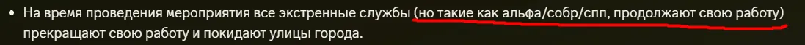

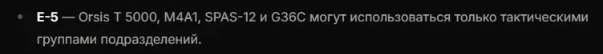
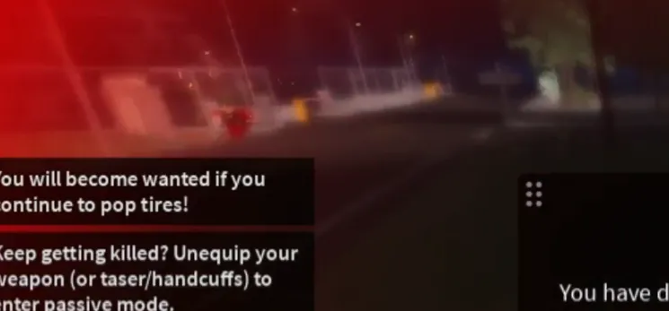
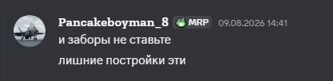
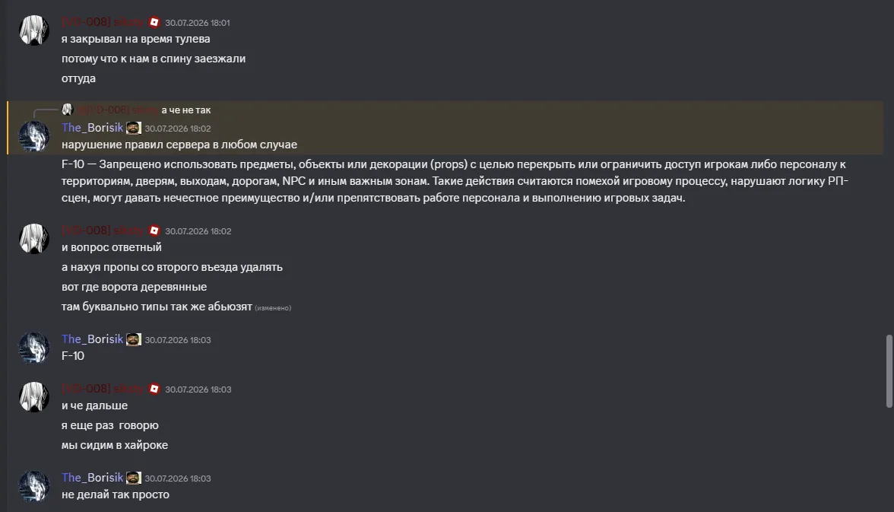
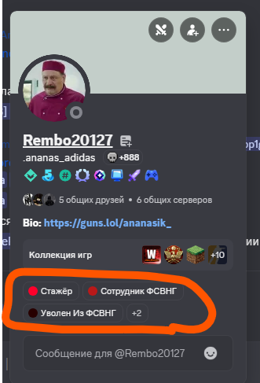
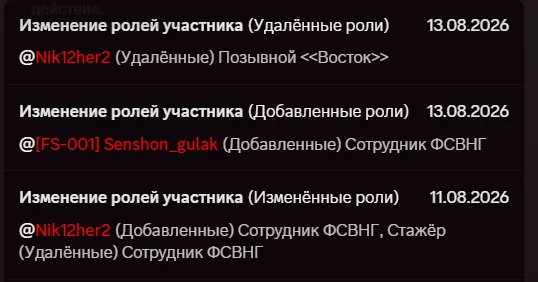
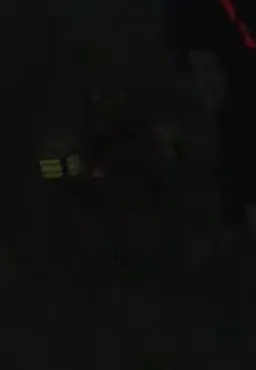
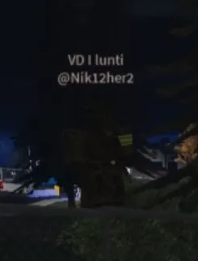
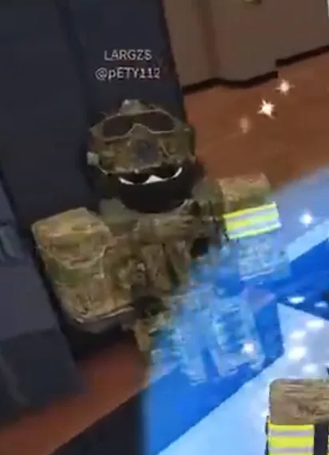
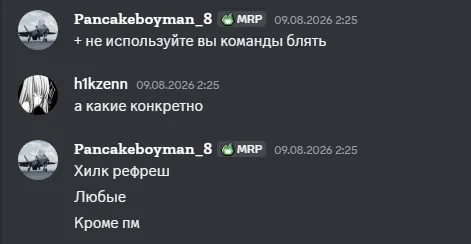
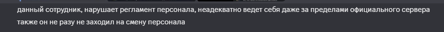
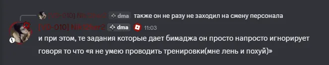
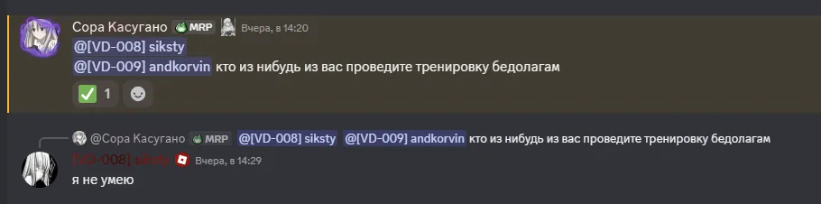
A-1.9 – Игнорирование приказов руководства
A-1.5 – Использование возможностей вне смены
A-1.13 – Использование мод-прав для получения игровых привилегий
A-1.3 – Вмешательство в RP-процесс
A-1.4 – Вмешательство в чужие жалобы
A-1.11 – Конфликт интересов
A-1.12 – Оскорбление игроков, неуважение, клевета
A-1.2 - Злоупотребление системой жалоб, "слив" игроков и персонала
A-1.7 - Халатность и неадекватное поведение
A-2.2 - Блат и превышение лимитов привилегий
A-2.3 - Несоразмерность наказаний
А-5 - Превышение разрешённого участия в RP
А-1.3.1 / А-1.3.3 - Нарушение обязанностей куратора.
C-3 / C-4 - Использование полномочий в личных целях и для нанесения ущерба
B-1 - Дискриминация и создание неравных условий
B-6 - Профессиональная честность
E-4 - Дискредитация коллег
E-3 - Некорректная критика
B-1.2 - Отсутствие отчетов о командах
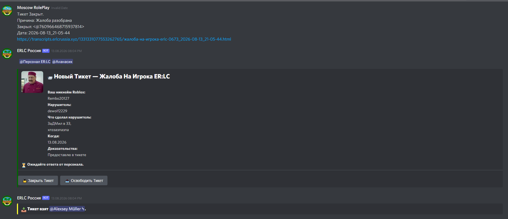
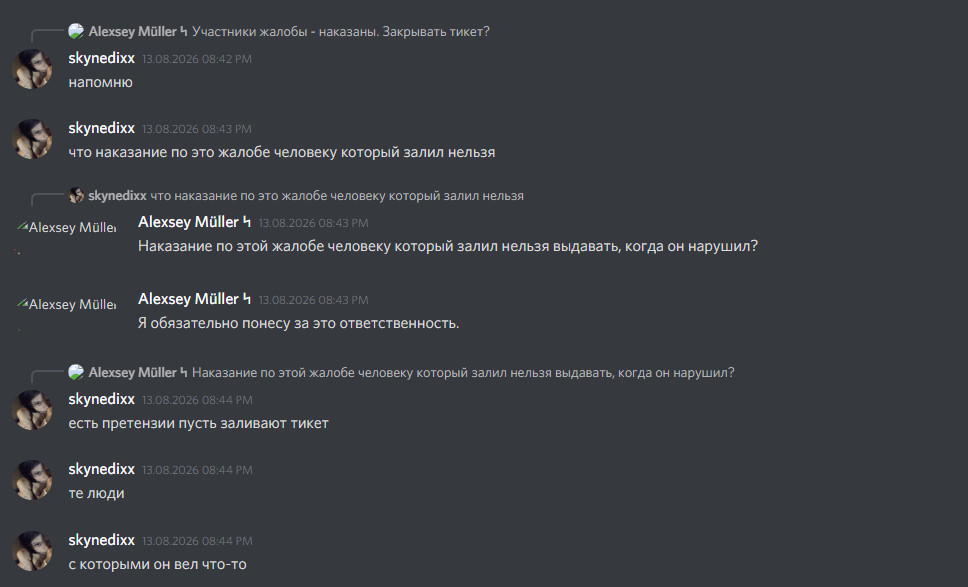

1. Увольнение из Команды Внутренних Дел Roblox.Нарушенные пункты: A-1.9, A-1.13, A-2.2 основного регламента персонала; C-3, C-4 кодекса этики персонала.
2. Снятие(либо выговор) с должности главного куратора.(предложение)Нарушенные пункты: A-1.3.1, A-1.3.3, А-5 правил кураторов; B-1, C-3, C-4 кодекса этики персонала.
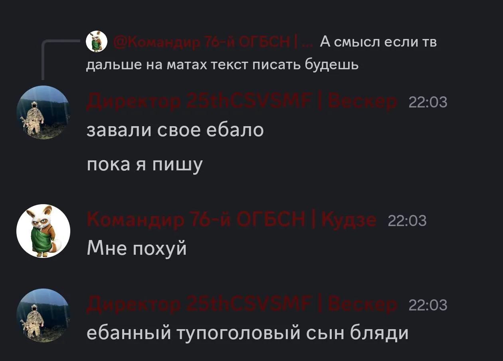


 Новый Тикет — Жалоба На Персонал ER:LC
Новый Тикет — Жалоба На Персонал ER:LC Ожидайте ответа от персонала.
Ожидайте ответа от персонала.
 Тикет взят
Тикет взят  Тикет закроется через несколько секунд...
Тикет закроется через несколько секунд...